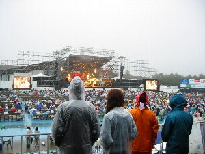
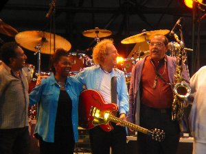
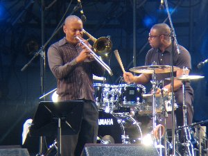

Mt.FUJI JAZZ FESTIVAL 2004 | ２００４年８月 |
|---|---|
| Mt.FUJI JAZZ FESTIVAL 2004 富士急ハイランド コニファーフォレスト ８月２８日のプログラム オルケスタ・デ・ラ・ルス（デラルス） 小松亮太 日野皓正 クインテット リー・リトナー オールスターズ ザ・クルセイダーズ ８月２８日。天気は曇りのち雨（小雨）。 アウトドアクラブなので「夏の屋外ライブに出てみてはどうか」で始めたJAZZ フェスも今回で２回目。場所は富士急ハイランド隣のコニファーフォレストです。富士急の駐車場出入り口ゲートの近くです。われわれはゲート近くの駐車場に車を止めた。 現場は駐車場から近かったが結構狭い感じがした。舞台から離れた位置に段差の腰掛（コンクリートでできたひな壇）があり、われわれはここをベースとした。 私のイメージとしては芝生などに椅子を置いてのんびりしたかったのだが、全面コンクリートであった。 | |
|  小雨降る中で♪ |  リー・リトナー♪ |
| ステージ前の椅子は指定席で入場制限がある。この後ろに自由席がある。だが椅子の間隔が狭いため椅子を持ち込んだ方が開放感的にあっていい。結構冷え込んだのでたすまんず全員はカッパを装備した。ここで一般客との装備の違いが明るみでた。‥「私たちって浮いていない？」‥そんなことはないと私は思う。ライブでは目立てば舞台のアーティストの視線がこちらに向くからお得なのだ。手を振れば「気が付けば」振り替えしてくれる。 ‥前置きはさておきJAZZフェスの内容である。 オルケスタ・デ・ラ・ルスがまず舞台へ。ボーカルはノースリーブです（寒そう）。サルサバンドです。サルサのイメージはカリブ海のダンス曲（多数明朗開放的）です。 暖気なしで場を盛り上げてくれる。酒が入らないと乗れない、てな感じでビールを開け呑む。変り種ワインもあけて試飲会を開く。結局、踊ることができなかった〔残念〕。でも全部が明るい曲で冷え込んだ場の雰囲気を盛り上げてくれたことに感謝したい。 | |
|  ザ・クルセイダーズ |  ザ・クルセイダーズ |
| 小松良太が２番手。バンドネオン（アコーディオンオルガンに似たもの）の演奏者。タンゴです。タンゴのイメージは屋内のダンス曲（少数明朗知的的）です。奏で出すと「聞いたことがある」と私は思った。貴重な生演奏を聞けてよかった◎。 日野皓正が３番手。Mｔ．FUJI最多出場のトランペッターです。トランペットのブロウ（吹く音）が空に響きわたる程大きく、また他の共演者との息もばっちり。流石、玄人（プロ）やってくれます。舞台でどうどうと歩回るのは圧巻。 リー・リトナー オールスターズが４番手です。全体的に流して聞くに心地よい曲が多い。そのまま昼寝をするもよし、読書にふけるもよしです。私はパンフレットを読んでおりました。リトナーがMCをかなりしてくれました〔大変うれしい〕♪ クルセイダーズが本日の最後です。私は「踊っていない」と思い、単独で正面観衆の中へ向かった。小刻みに踊っている人が結構いました。「踊りに来たのは私だけでない」を再確認しました。こちらも流し聞きするにはよい曲です。 最後に花火が上がりました。 | |
| 写真：べっしー 、 コメント：シュガー | |